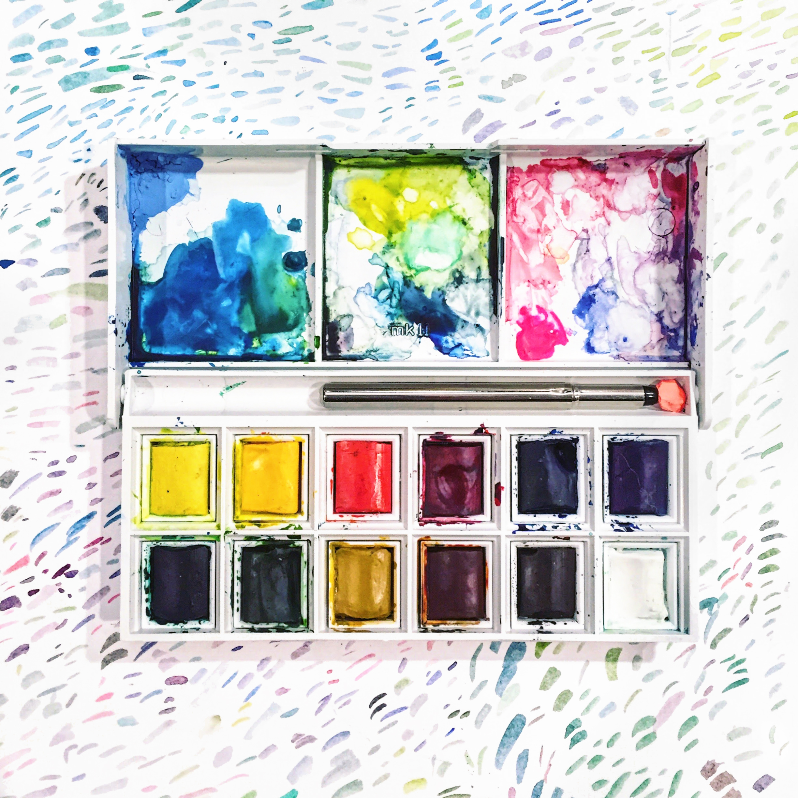

Currently
Meta, Graphics Software Engineer / Tech LeadPreviously: Laika, Blizzard, Pixar


emilee [em-uh-lee]
noun
syn: Ting-Yu, Laviee
For almost ten years I've been writing code to make pretty pictures: crowds at Pixar, cinematics at Blizzard, and these days as a graphics SWE at Meta. I've been trying to figure out how to combine art and programming since studying Computer Science and Art Practice at UC Berkeley.
I enjoy all forms of making and crafting (currently: stained glass, altering magic cards, designing 3d prints) and video games.
Thanks for stopping by!